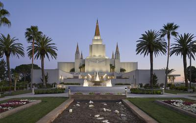

Oakland California Temple
David O. McKay dedicated the Oakland Temple on 17 November 1964, becoming the 13th dedicated temple in operation.
Dallin H. Oaks rededicated the Oakland Temple on 16 June 2019.
sq ft: 80,157